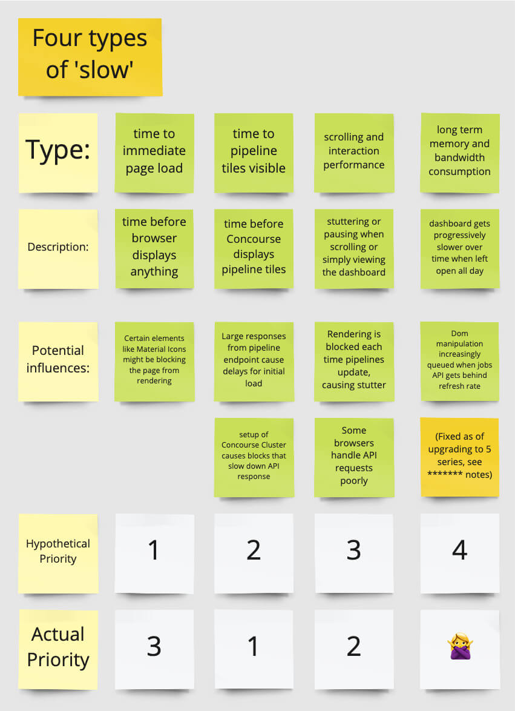

Problem Definition and Framing
Starting with teams in our company who use Concourse as part of their path to production, then reaching out to key customers, and then to open source users running mission-critical Concourse installations, we sought to validate four key performance issues that had been reported:
- Time to first paint - Issues where the Concourse Web UI was slow to respond to a browser's request, leading to a delay before users see anything load on screen
- Time to interactivity - Issues where the Concourse web instance loaded, only to appear 'locked' while job and task information is loaded from the API
- Scrolling and interaction performance - Issues where the user's browser can't render the page quickly enough to provide smooth scrolling frame rates, or clicks the user makes when navigating or starting tasks aren't responsive without noticeable delays.
- Long term performance over time between refreshes - Issues where the Web UI performance would degrade and eventually freeze up after being left open as a dashboard for hours or days at a time.
I devised a research plan and interview script that focused on observing the actual behavior of our users - their Concourse instances, their computers, their choice of browser, their internet connections, and also their specific workflows and needs - while we guided them through their everyday tasks. This contextual inquiry was conducted with my PM and a member of our engineering team in each interview, so that they could take notes and understand the insights revealed first-hand, developing their own perspectives on what we were learning while I worked with each participant.

{kind=link}
{kind=link}
Through this contextual inquiry and direct observation, we learned that time to interactivity was the most prevelant and the highest priority. We learned that scrolling and interactivity performance was limited to users running unsupported browsers, but could be a problem across all browsers in the future, if left unchecked. The issue of 'time to first paint' was negligible in any of the production and test environments we observed, no matter what the scale, so it was prioritized behind the others. And lastly, we were able to fully invalidate the fourth issue entirely by following up with the users who had originally reported it - this issue was limited to users running an outdated version of Concourse, and was solved during their next upgrade cycle.
At this point we had a clear understanding of a multidimensional problem space, an evidence-backed prioritization, and had learned what we needed in order to start developing solutions that we knew would provide real value to our users, without any risk of wasting time on the wrong issue.
{kind=link}
{kind=link}